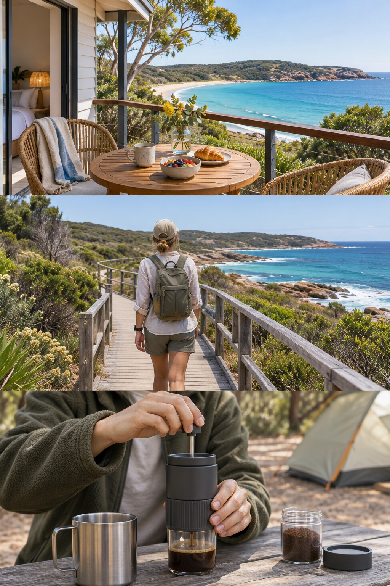

The off-camera storyteller.
Share a campsite, a hidden beach or a day on the road. Let your own footage do the showing and narration do the telling.
Your presence, without being on camera.

For independent travel & UGC creators
Your story.
A voice you choose.
Turn your photos, clips and voice notes into a narrated Reel. Keep your point of view and choose a different voice for the final cut.
See how it would workIn development. Early conversations welcome.
The creator problem
You have the photos and a story to tell, but you may not want your everyday voice, accent or delivery in the final video.
Start in your chosen language. Review a script in your own words, then choose a narrator and delivery that fit the story. You can keep that language or adapt the video for a second audience.
Your face is optional. Narration can carry the story over your photos and clips. No talking-head performance or lip-sync is required for that format. Relevant footage supports the story; it does not have to illustrate every sentence literally.
How it would work
A stay by the sea is one example. Bring your own material, shape the story and choose a different voice to narrate it. The same workflow can start from a day trip, a product demonstration or another story.
Illustrated concept, not a working editor. The hotel and story below are fictional.
“Loved the view. The room was simple.
Breakfast outside was the best part.”
Bring your photos, clips and a voice note. Say what you liked, what you did not, and what the video should be about. No polished script or on-camera performance needed.
Start with: your own material and point of view.
“I came for this view.”
“A simple room, with the bay right outside.”
“Stay for a slow breakfast by the water.”
Choose a template, or share a reference video to describe the style. Creator Flow would suggest a script and relevant scenes, not force a picture against every word. You review the meaning, facts and edit.
You review: the words, the style and the order of shots.
Illustrative voice choices, not an audio sample.
Generate narration from the approved script with a licensed voice. Compare tone, pace and pronunciation in the same language. Adapt it into another language only when you want a second version.
You approve: the voice, pronunciation, timing and captions.
A short edit with your photos, chosen voice and captions.
Vertical video · MP4Review each version.
Then choose to share.
Start with a short Instagram Reel. A fuller Facebook cut can add commentary. A longer YouTube story is a separate format to explore, not a promised integration.
You get: video files to share yourself, not an automatic post.
This shows the experience we are building, not a live upload or editing service. The pictures are generated examples; your own photos and recordings would supply your story. What works today, and what comes next
Voice examples

Keep the creator's actual observations; use a warm narrator instead of rerecording the review.
We came for the view, but breakfast on the terrace was what made us want to stay.
Let the footage carry the place and a calm narrator carry the creator's account.
We took the boardwalk early, before the crowds. Around the bend, the whole bay opened up.
Use a clear narrator for the approved steps while the creator's footage shows the product.
Add the grounds, pour in the hot water, then press slowly. That's the whole setup.
Fictional scripts and generated images. No ElevenLabs audio or customer results are shown.
An early glimpse
The format is taking shape.
The full creator experience comes next.
Made for your kind of story
Share a campsite, a hidden beach or a day on the road. Let your own footage do the showing and narration do the telling.
Your presence, without being on camera.
Start in the language that feels natural. Review an adaptation in your chosen language and choose a voice you feel comfortable sharing.
Your meaning, for a wider audience.
Bring your own hotel or experience footage and a UGC brief. Shape the story around what you actually experienced.
A story that stays true to the brief.
Start with a short Instagram Reel. Add context for a fuller Facebook story, or explore a longer YouTube format later. Each cut serves a different audience.
One starting point, a longer-term creative workflow.
Why build this?
YouTube reports that creators uploading multiple audio languages received, on average, over 25% of watch time from non-primary languages as of July 2025. That is a signal of audience interest, not a promised uplift or proof of demand for Creator Flow.
YouTube's reported results, September 2025Our proposed model is a subscription for the full creation workflow, with an included generation allowance and optional extra usage. Customers would pay for repeatable videos and language versions, not resale of voice-provider credits.
Business model and API economics2m professional creators × an assumed US$15/month × 12.
The creator count is derived from a 2023 Goldman Sachs estimate, not a current census. This is an intentionally broad scenario, not a measured market for this product. How many creators need this narration workflow, can be reached and will pay is not yet established. See TAM, SAM, assumptions and validation.
Built with intention
A local prototype can turn a prepared script and selected pictures into a captioned video. It also transcribes English recordings. These are separate building blocks, not yet the complete experience shown above.
Easy photo and voice-note input, useful automatic picture selection, a voice you have heard and approved, and a simple place to review the result. The full journey has not been tested with creators; there is no public editor or price yet.
We would use text-to-speech to narrate an approved script in a different licensed voice. Credits would let us compare voices and retakes across real, permitted stories, check pronunciation and caption timing, and measure the cost per approved export. ElevenLabs is a candidate, not an announced partner or a live feature here.
Voice conversion is not guaranteed accent removal. A reviewed script with a chosen narration voice offers a different route. The technical plan and current limits
A few things to know
Not as a self-service tool. The local prototype is in development; we're inviting conversations with creators before a pilot.
The intended workflow offers a licensed narration voice or a voice used with explicit permission. No voice cloning or upload happens on this website.
You bring your own media or material you are licensed to use. Our planned workflow keeps the original story and a final human review; this preview does not accept media uploads.
Automatic publishing is a future direction, not an available feature. The initial goal is an export you review and share yourself.
Start with a conversation
Tell us where your production gets stuck. We're speaking with independent creators to shape a small pilot.
No payment, subscription or immediate product access.
This static preview has no application-level analytics, account creation or media uploads. Enquiry text stays in your browser until you send it through your email app to CONSENS PTY LTD. The hosting/CDN and email providers may process technical data under their own policies. Please do not include private media or sensitive information. Questions or deletion requests: kirill@consens.com.au.